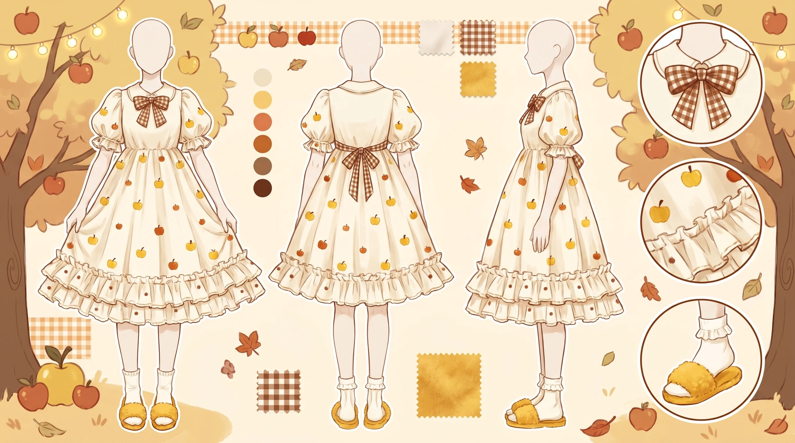
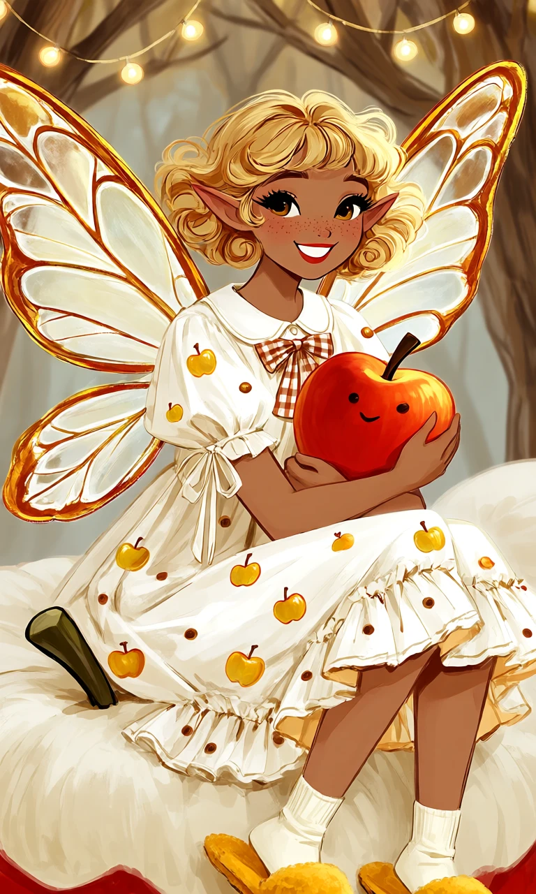

Apple Orchard Daydream

Outfit Prompt
A loose buttercream cotton nightgown with short puff sleeves, a rounded collar, and a knee-length skirt with a double ruffle at the hem. Tiny golden apples and cinnamon-brown dots are scattered across the fabric. A small cinnamon gingham bow sits at the neckline, and soft fabric ties fasten above. Cream ankle socks and fuzzy honey-yellow slippers.
Outfit Examples

